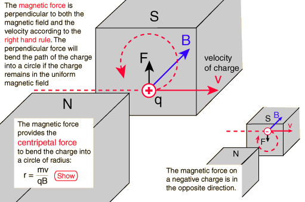

Magnetic Force on Moving Charge
This is an active graphic. Click on highlighted text for further detail.

Magnetic interactions with charge
Magnetic force applications
Bending a charge into a circular path
Index
Electromagnetic force
Magnetic field concepts
HyperPhysics
*****
Electricity and Magnetism
R Nave
Go Back